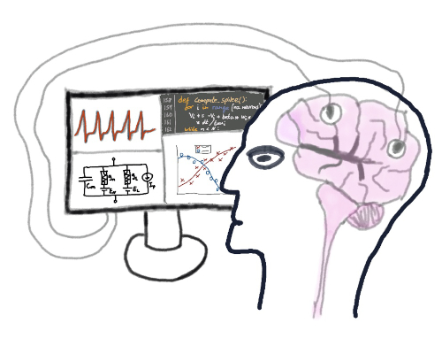

Latest Posts
The Harmony of Openness and Reservation (18th December 2022)
An Important Lesson on Mental Health from a Failed Marathon Attempt (28th October 2021)
The Cost Of Independence, Is More Dependence (12th March 2021)
Computational Psychiatry – What is it, and why is it important? (20th September 2020) 